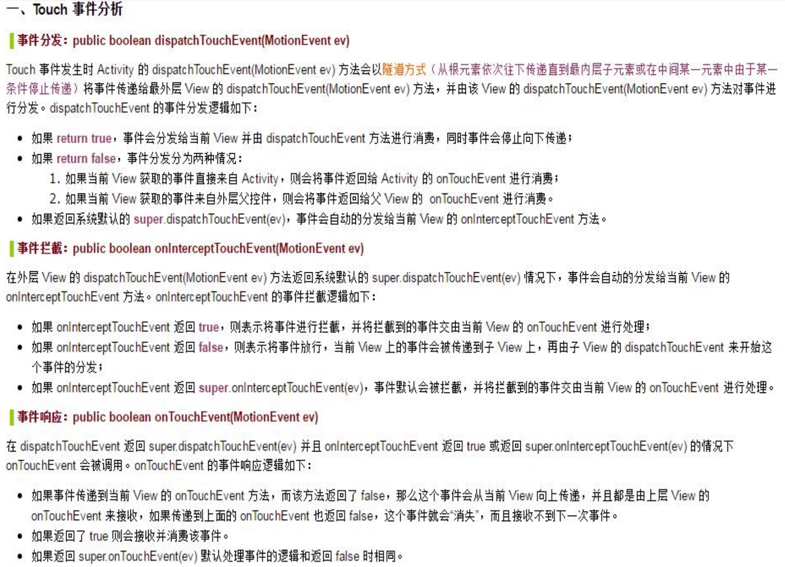

21. Android内存优化方法：ListView优化，及时关闭资源，图片缓存等等
首先有一些与内存泄漏相关的点：
1.具有close方法的对象切记调用close方法释放资源
常见的有Cursor和各种流等对象。博主就曾经因为Cursor对象忘记close，在进行了多次数据库查询后APP就因为OOM而崩溃了。
2.动态注册的广播不使用后记得取消注册
取消注册后可释放Context中持有的相关的广播过滤器资源。
3.bitmap的recycle方法
在Android3.0版本以前，bitmap对象的构造涉及到JVM的两块内存区域：一块是Bitmap对象所在的Java堆，一块是Bitmap对象持有的native层资源所在的Native堆。在Java堆上分配的资源由于JVM的GC机制的关系我们不需要去特别关心，但在Native堆上分配的资源就需要我们显式地调用bitmap的native方法recycle去回收了。然而在Android3.0版本后bitmap内存资源分配都在Java堆上，因此是否调用recycle方法对内存影响就不大了。
4.listView的Adapter中注意convertView的使用
在Adapter的getView方法中，有一个重要的参数就是convertView。convertView是一个View参数，它代表了一个回收的View（如果没有就为null）。Android的ListView虽然看起来有很多项，但其实真正的ItemView的数目只有屏幕上显示的哪几个，当一个ItemView从可见变为不可见时，他就会被回收掉，在下次调用getView方法时传入的convertView就是某个被回收的View。因此在getView方法中，当convertView不为null时，我们应该使用convertView而不是重新创建一个View。更高效的方式是把convertView结合一个自定义的ViewHolder一起使用，可以有效的减少findViewById的时间。
5.非静态内部类handler
Handler常见的应用场景是多线程的通信，此时要是Handler使用不当就相当容易造成内存泄露。在多线程通信的场景下，子线程通常都会持有Handler对象的引用，如果一个Handler对象在Activity中不是静态的，那么该Handler对象就会持有该Activity对象的引用，从而导致Activity组件无法正常的被GC回收，导致了内存泄露。因此一般而言我们应该把Handler对象置为Activity中的静态变量，通过软引用或者弱引用的方式来获取Activity及其内部域，避免持有Activity的强引用导致该组件无法回收。
6.集合对象清理
对于一些集合中不再使用的对象，我们应该把它们移除出我们的集合。避免由于集合持有那些对象的引用导致它们无法被JVM的GC所回收。
还有一些内存优化的方法，个人认为有以下几个方面：
- Java引用的灵活使用
- 图片缓存
- Bitmap压缩加载
Java引用的灵活使用
众所周知，在Java中有强软弱虚四种引用，合理的使用软引用和弱引用有利于GC工作的进行，回收不需要的内存。
图片缓存
使用图片缓存可以有效防止内存中同时载入过多的图片，也可以减少经常载入图片所耗费的时间。
一般而言，设计图片缓存的思路如下，可以把图片的缓存分为以下几个层级：
- 强引用 HashMap （用于存储最常用的图片）
- 软引用 HashMap （用于存储比较常用的图片）
- SD卡 （用于存储使用过的图片）
- 下载 （第一次使用）
一般而言我们都是用LRU算法（最近最少使用），最近使用的图片一般缓存于强引用的HashMap中，随着使用次数的减少慢慢移动至软引用HashMap、SD卡中。
除了我们自己设计图片缓存外，我们还可以直接使用Google提供的LruCache（内部由LinkedHashMap实现缓存队列），以及DiskLruCache
Bitmap压缩加载
对于某些原尺寸特别大的图片，我们可以选择压缩后再加载以节省我们的内存空间：
// 创建解析参数
Options options = new Options();
// 只解析大小，并不生成实际图片
options.inJustDecodeBounds = true;
BitmapFactory.decodeFile(pathName, options);
// 计算缩放大小
int widthScale = options.outWidth/width_we_need;
int heightScale = options.outHeight/height_we_need;
// 选取小的为缩放尺寸
options.inSampleSize = Math.min(widthScale, heightScale);
// 生成Bitmap
options.inJustDecodeBounds = false; // 记得关掉
Bitmap bitmap = BitmapFactory.decodeFile(pathName, options);
压缩到合适的尺寸后再加载就不必担心原来的bitmap太大而占用内存空间了。
22. Android中弱引用与软引用的应用场景
软引用与弱引用一般用于：需要某个对象，但又不关心它的死活的时候（就是该对象存在就用，不存在就算了）。
在Android中的应用场景主要有：
- Handler获取Activity的引用：使用静态变量和软弱引用保证不干扰Activity的回收
- 缓存设计：使用软弱应用保证内存紧张时GC可以回收使用较少的缓存资源
23. Bitmap的四中属性，与每种属性队形的大小。
在 Android 中图片有四种属性，分别是：
ALPHA_8：每个像素占用 1byte 内存
ARGB_4444：每个像素占用 2byte 内存
ARGB_8888：每个像素占用 4byte 内存 （默认）
RGB_565：每个像素占用 2byte 内存(没有 alpha 属性)
24. View与View Group分类，自定义View过程：onMeasure()、onLayout()、onDraw()
View是Android中基本的UI单元，占据屏幕的一块矩形区域，可用于绘制并能处理事件，而ViewGroup是View的子类，他能包含多个View，并让他们在其中按照一定的规则排列。VIew与ViewGroup的设计使用了组合模式。
自定义View我们一般需要重写一下三个方法：
- onMeasure：用于测量自定义View的大小，在方法中必须调用setMeasureDimension方法
- onLayout：用于确定自定义View布局
- onDraw：用于绘制自定义View本身
25. Touch事件分发机制

26. Android长连接，怎么处理心跳机制
所谓的心跳包就是客户端定时放送简单的信息给服务器端，告诉它我还在而已。代码就是每隔几分钟发送一个固定信息给服务器端，服务器端回复一个固定信息。如果服务器端几分钟后没有收到客户端信息则视客户端断开。比如有些通信软件长时间不适用，要想知道它的状态是在线还是离线，就需要心跳包，定时发包收包。
心跳包之所以叫心跳包是因为：它像心跳一样每隔固定时间发一次，以此来告诉服务器，这个客户端还活在。事实上这是为了保持长连接，至于这个包的内容，是没有什么特别规定的，不过一般都是很小的包，或者只包含包头的一个空包。
在TCP机制里面，本身是存在有心跳包机制的，也就是TCP选项:SO_KEEPALIVE. 系统默认是设置的2小时的心跳频率。
心跳包的机制，其实就是传统的长连接。或许有的人知道消息推送的机制，消息推送也是一种长连接 ，是将数据有服务器端推送到客户端这边从而改变传统的“拉”的请求方式。下面我来介绍一下安卓和客户端两个数据请求的方式
1、push 这个也就是有服务器推送到客户端这边 现在有第三方技术 比如极光推送。
2、pull 这种方式就是客户端向服务器发送请求数据（http请求）
1、首先服务器和客户端有一次“握手”
public void connect()
{
LogUtil.e(TAG, "准备链接...");
InetAddress serverAddr;
try {
socket = new Socket(Config.Host, Config.SockectPort);
_connect = true;
mReceiveThread = new ReceiveThread();
receiveStop = false;
mReceiveThread.start();
LogUtil.e(TAG, "链接成功.");
} catch (Exception e) {
LogUtil.e(TAG, "链接出错." + e.getMessage().toString());
e.printStackTrace();
}
}
2、下面就要开启一个线程 去不断读取服务器那边传过来的数据 采用Thread去实现
private class ReceiveThread extends Thread {
private byte[] buf;
private String str = null;
@Override
public void run() {
while (true) {
try {
// LogUtil.e(TAG, "监听中...:"+socket.isConnected());
if (socket!=null && socket.isConnected()) {
if (!socket.isInputShutdown()) {
BufferedReader inStream = new BufferedReader(
new InputStreamReader(
socket.getInputStream()));
String content = inStream.readLine();
if (content == null)
continue;
LogUtil.e(TAG, "收到信息:" + content);
LogUtil.e(TAG, "信息长度:"+content.length());
if (!content.startsWith("CMD:"))
continue;
int spacePos = content.indexOf(" ");
if (spacePos == -1)
continue;
String cmd = content.substring(4, spacePos);
String body = content.substring(spacePos).trim();
LogUtil.e(TAG, "收到信息(CMD):" + cmd);
LogUtil.e(TAG, "收到信息(BODY):" + body);
if (cmd.equals("LOGIN"))
{
// 登录
ReceiveLogin(body);
continue;
}
if (cmd.equals("KEEPLIVE")) {
if (!body.equals("1")) {
Log.e(TAG, "心跳时检测到异常，重新登录!");
socket = null;
KeepAlive();
} else {
Date now = Calendar.getInstance().getTime();
lastKeepAliveOkTime = now;
}
continue;
}
}
} else {
if(socket!=null)
LogUtil.e(TAG, "链接状态:" + socket.isConnected());
}
} catch (Exception e) {
LogUtil.e(TAG, "监听出错:" + e.toString());
e.printStackTrace();
}
}
}
3 、 Socket 是否断开了 断开了 需要重新去连接
public void KeepAlive()
{
// 判断socket是否已断开,断开就重连
if (lastKeepAliveOkTime != null) {
LogUtil.e(
TAG,
"上次心跳成功时间:"
+ DateTimeUtil.dateFormat(lastKeepAliveOkTime,
"yyyy-MM-dd HH:mm:ss"));
Date now = Calendar.getInstance().getTime();
long between = (now.getTime() - lastKeepAliveOkTime.getTime());// 得到两者的毫秒数
if (between > 60 * 1000) {
LogUtil.e(TAG, "心跳异常超过1分钟,重新连接:");
lastKeepAliveOkTime = null;
socket = null;
}
} else {
lastKeepAliveOkTime = Calendar.getInstance().getTime();
}
if (!checkIsAlive()) {
LogUtil.e(TAG, "链接已断开,重新连接.");
connect();
if (loginPara != null)
Login(loginPara);
}
//此方法是检测是否连接
boolean checkIsAlive() {
if (socket == null)
return false;
try {
socket.sendUrgentData(0xFF);
} catch (IOException e) {
return false;
}
return true;
}
//然后发送数据的方法
public void sendmessage(String msg) {
if (!checkIsAlive())
return;
LogUtil.e(TAG, "准备发送消息:" + msg);
try {
if (socket != null && socket.isConnected()) {
if (!socket.isOutputShutdown()) {
PrintWriter outStream = new PrintWriter(new BufferedWriter(
new OutputStreamWriter(socket.getOutputStream())),
true);
outStream.print(msg + (char) 13 + (char) 10);
outStream.flush();
}
}
LogUtil.e(TAG, "发送成功!");
} catch (Exception e) {
e.printStackTrace();
}
}
实现轮询
原理
其原理在于在android端的程序中，让一个SERVICE一直跑在后台，在规定时间之内调用服务器接口进行数据获取。
这里的原理很简单，当然实现起来也不难；
然后，这个类之中肯定要做网络了数据请求，所以我们在Service中建立一个线程（因为在android系统中网络请求属于长时间操作，不能放主线程，不然会导致异常），在线程中和服务器进行通信。
最后，这个逻辑写完后，我们需要考虑一个问题，如何进行在规定时间内调用该服务器，当然可以用Thread+Handler(这个不是那么稳定),也可以使用AlamManager+Thread（比较稳定），因为我们需要其在后台一直运行，所以可以依靠系统的Alammanager这个类来实现，Alammanager是属于系统的一个闹钟提醒类，通过它我们能实现在规定间隔时间调用，并且也比较稳定，这个service被杀后会自己自动启动服务。
27. Zygote的启动过程。
1. 系统启动时init进程会创建Zygote进程，Zygote进程负责后续Android应用程序框架层的其它进程的创建和启动工作。
2. Zygote进程会首先创建一个SystemServer进程，SystemServer进程负责启动系统的关键服务，如包管理服务PackageManagerService和应用程序组件管理服务ActivityManagerService。
3. 当我们需要启动一个Android应用程序时，ActivityManagerService会通过Socket进程间通信机制，通知Zygote进程为这个应用程序创建一个新的进程。
28. Android IPC:Binder原理
29. HTTPS连接流程
服务器端的公钥和私钥（非对称加密）
客户端生成的随机密钥（对称加密）
一个HTTPS包括两次HTTP传输：（8步）
1.客 -> 服，发起HTTPS请求，连接443接口；
2.服务器端拥有一对公钥和私钥进行非对称加密；
3.服务器 -> 发送公钥给客户端
4.客户端检查公钥的合法性，合格会生成一个随机的客户端密钥，并用公钥进行加密；
5.客户端发送给服务器端加密后的客户密钥；
6.服务器用私钥进行解密，获取到客户端密钥后用它对数据进行加密，这样数据就变成了密文；
7.服务器将加密后的密文发送给客户端；
8.客户端使用客户端密钥进行解密。